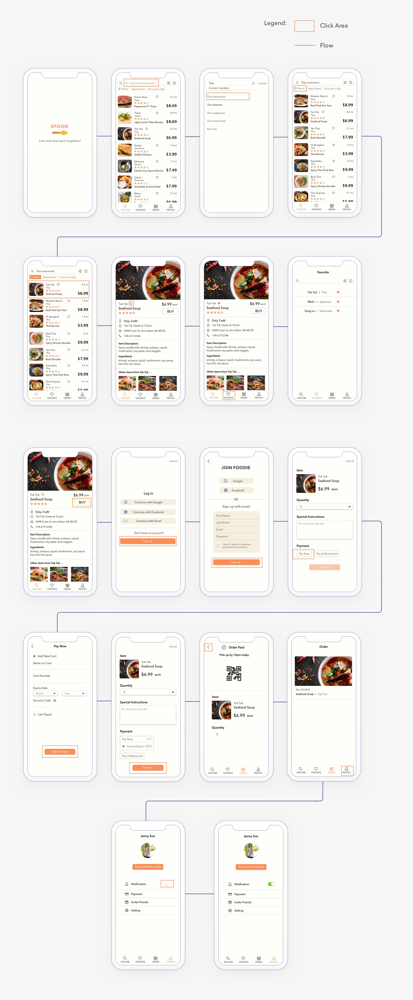

Challenge
How do we help restaurants reduce food waste?
One day I was talking with a friend who worked at a restaurant. She told me that the restaurant threw away lots of fresh food everyday because they usually cook more just in case. I was intrigued and did a research about food waste. I found out that a great portion of food waste comes from restaurants. Therefore, I want to design a system that helps reduce food waste at restaurants and raise the awareness of food waste.
Final Design Overview
Spoon - buy discounted surplus meals from restaurants before they close for the day.

1. Look for discounted meals nearby can never be easier!
Just click on the Nearby filter, the result will automatically rearrange according to distance, with the closet on the top. Map view is also available.

2. Purchase your favorite meals without a hassle.
Link a credit card and purchase the meals with just 2 clicks. Once complete the payment, users will be reminded when to pick up the meal. Primary order information is shown on the page.
3. Keep track of how much you have saved.
They system accumulates how much food and money users have saved to increase motivation.

4. Remember what meals you have purchased.
Order history is clean and organized that helps users record the meals they have bought. It's just like a receipt!
Design Process at a Glance
Research
| Interviews
I targeted my interview participants at general users(customers) and restaurants workers/owners. For general users, since everyone’s habit of getting food is so diverse, I talked to 5 people at different ages and professions to find commonalities between them.
The two overarching questions are:
● How do the participants go about getting food at restaurants?
● What are the primary concerns when they get food?
For the participants who use dining apps, I had them perform how they use it by giving them a scenario. It was a good opportunity to observe them and see what are the normal or unusual behaviors.
In addition to general users, I also talked to 3 of my friends who own or work at restaurants. It helped me get more insights about food waste at restaurants and what system could help mitigate the problem.
Throughout the interviews, I asked open-ended questions. At this stage, it is important to find their needs and investigate what aspects of the current situations could be improved.
| Synthesize Findings
Based on the interviews, I found out that price, proximity, and rating are three elements that are important to general users. When people seek to dine out or buy take out, they are looking for convenience and quality.
For restaurateurs, they want to find a better use of surplus food. The best case would be selling it, but donation would work as well, as long as it doesn’t take them too much time.
There are two root causes of the issues that general users and restaurant owners have respectively.
| Design Focus
Given the findings that users like to save money on food and restaurateurs like to make good use of surplus food, I decided to create a system that allows people to buy discounted surplus meals from restaurants.
For the device, I decided to narrow down my focus to a mobile app because people usually look for food on the go.
Based on what I got from the interviews, I came up with a list of system requirements. Some key requirements include:
For custormers
1. Find discounted meals nearby.
2. Follow the restaurants they like.
3. Pay without a hassle.
4. Be able to rate the restaurants/ see the rating of the restaurant.
For restaurateurs
1. Set up quickly.
2. Implement with ease.
Explore
| Storyboard
With a high-level business model established, I drew a storyboard illustrating how might a user use the application. .
| Persona
With a better understanding of the needs, I developed 3 personas — a restaurateur and 2 customers. The motivations and constraints are based on my findings and observations from the interviews. Below is two of them.
Materialize
| Information Architecture
Note: For the design part, I focused on the customers end at this point because it involves more interaction design.
Having the knowledge of what content should be in the application, I created a structure that gives me a better picture of how the information relates to each other. The diagram has gone through one change, the one below is the final version.
| Wireframes and Navigation Flow
I created wireframes for key screens and the navigation flow. I chose 3 primary tasks, which included finding a discounted meal, purchase it, and follow the restaurant. This step has been iterated for multiple times. Here’s the first draft.
| Paper Prototype
I made the wireframes and the flow into paper prototypes so I can test with users with tangible materials.
Validate and Iterate
| 1st User Testing
After the first round of user testing with my prototypes, I found many valuable insights from the feedback and my observation. There are 2 key findings that need to be improved:
1. The distance filter
2. The discovery of “Following”
| 1st Iteration/ mid-fi prototype
I remade the wireframes based on the findings to improve usability. At this point, I widen the the task focus to go beyond the key tasks. Here’s the second draft.
| Heuristic Evaluation
Instead of another usability test, I conducted a heuristic evaluation and looked at the design closely to investigate whether the design violate usability rules. See the full report here.
| 2nd Iteration/ hi-fi prototype
In this hi-fi prototype, I fixed the issues identified in heuristic evaluation. In addition, more screens and interactions are added to cover all the basic tasks that users will encounter in my system. I also made this prototype interactive in InVision so I can test with users.
- 
| 2nd User Testing
In the second round of user testing, the overall reactions were good. Some users pointed out a couple of minor issues that hindered the navigation or usability. The suggestions that have been brought by different people include:
1. Map View: Some users preferred seeing a map view.
2. Saving Record: Users would like to see how much they have saved.
3. Order Status: Users wondered that whether the order status will change after pick-up.
| 3rd Iteration/ minor fixes and finalize
From the user’s feedback, I did a final tweak on the design and added the following:
Map View

Saving Power
Change of Order Status
What I learned
| Developing Design System
This is my first time dealing with so many assets. It made me realize the importance of creating a design system and library. Thus, I learned how to manage my design assets in a more organized fashion. It is an important skill for a designer because there are many materials that can be reused throughout the iterations or across projects. It will make my future work flow more efficient!
| Testing Makes Perfect!
I tried to do as many usability tests as I could because it helped me verify my assumptions. Besides the major user tests, I also did micro tests for certain interactions. Every user test gave me lots of ideas of improvement. Another thing I enjoy about user testings is to observe their reactions. Sometimes even though users don’t realize their own emotions, their facial expressions tell it all!
Future Steps
I would like to work on the application that restaurants will use. Additionaly, when I was playing with the final interactive prototype, I felt that it would be fun to increase the incentive of using my application by offering some gifts. For example, colleting 6 meals and get 1 for free.